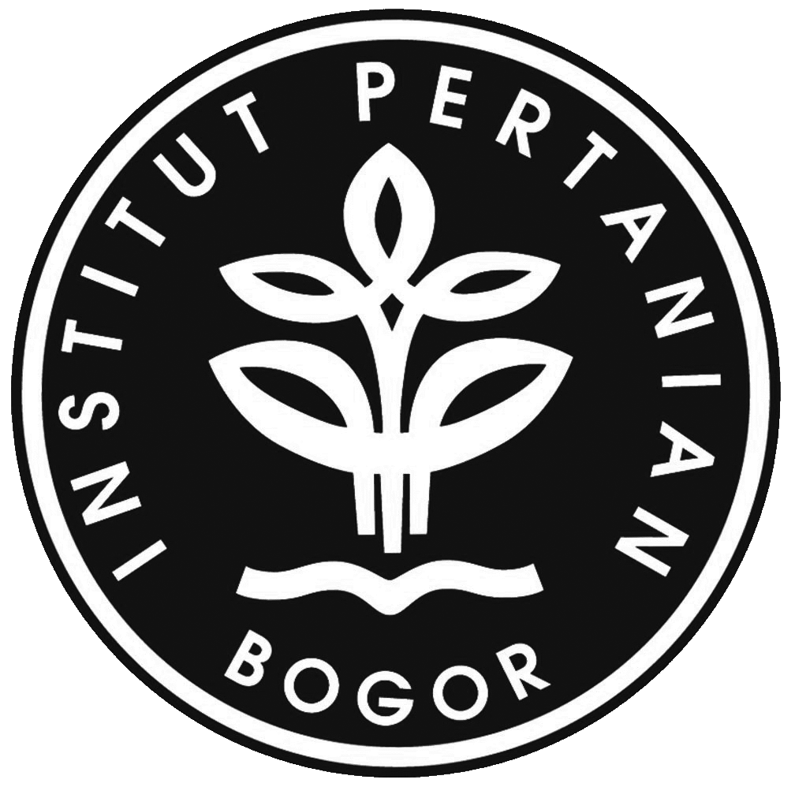
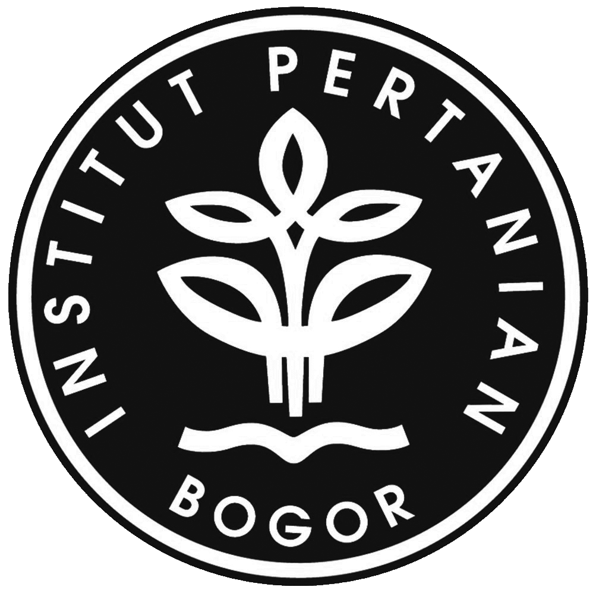

Manajemen Informatika
Kampus Program Diploma Institut Pertanian Bogor (Jl. Kumbang No. 14 , Cilibende)
Koordinator Program Keahlian : Dr. Ir. Muhamad Syamsun, MSc
Sekretaris Program Keahlian : Medhanita Dewi Renanti, SKom MKom
Visi
Memproyeksikan diri untuk menjadi Program Keahlian yang terkemuka dibidang manajemen informatika di Indonesia dalam sepuluh tahun mendatang.
Misi
Menyelenggarakan kegiatan pendidikan dan pelatihan dibidang manajemen informatika yang selalu mempertimbangkan kebutuhan industri, masyarakat dan profesional serta perkembangan IPTEK sehingga dapat menghasilkan lulusan berkualitas tinggi dengan memiliki pengetahuan dan keterampilan profesional dibidang manajemen informatika yang mendukung pertumbuhan kewirausahaan dan mampu melanjutkan ke jenjang pendidikan yang lebih tinggi.
Tujuan
Menghasilkan tenaga ahli madya yang memahami konsep pemrograman dan teknologi informasi serta terampil menangani sistim informasi manajemen, perangkat komputasi ilmiah, multimedia dan jaringan komputer.
Kompetensi Kelulusan
-
Memiliki ketrampilan mengoperasikan perangkat-perangkat yang menunjang kelancaran system informasi untuk administrasi perkantoran, desktop publishing, utility, multimedia dan jaringan.
-
Memiliki kemampuan merancang dan mengimplementasikan system manajemen basisdata termasuk basis data klien/server.
-
Memiliki kemampuan mengembangkan dan memodifikasi software, baik dalam bahasa pemrograman terstruktur yang meliputi bahasa pemrograman procedural dan bahasa pemrograman berorientasi obyek maupun dalam bahasa berbasis query.
Lapangan Pekerjaan
-
Sistem administrator.
-
Perancangan sistem basisdata (desktop maupun yang berbasis klien/server).
-
Programmer, Web Developer.
-
Management System Information Staff/Electronic data processing staff.
 
Copyright© Dicky Eka R. (INF'52) | Program Diploma | Institut Pertanian Bogor, 2017

Copyright© Dicky Eka R. (INF'52) | Program Diploma | Institut Pertanian Bogor, 2017